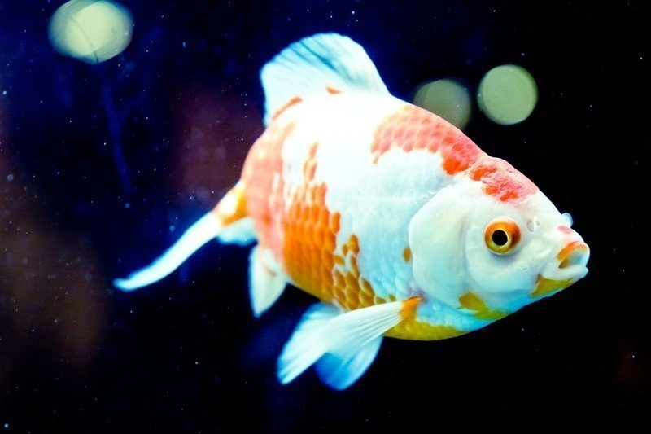

世の中、頭では考えているものの、中々行動に移せないことが多い。
確かに空想では損をすることもないし、果てしなく夢を広げることだって可能だ。しかし、それだけでは現実は何も変わらない。所詮絵に描いた餅なのだ。
一方、行動することにはリスクを伴う。それでも、我々生き物は勇気ある一歩を踏み出さねばならない時があるのだ。その先にはきっと、思い描いた大きな夢が現実となって待っているのだから。
金魚が人のもとから逃げる。
それはたとえ頭の中で空想した金魚がいたとしても、実際にそれに挑戦し成功した者はこの世の中どれほどいるだろうか。
いや、これまでもこれからもそんな輩は私たちだけだろう。それほどの偉業ともいうべき領域に、私たちは足を踏み入れたのである。
「大丈夫だ」
心配しているナイデルにそう返すと、私たちは自然と笑い合った。腹から笑ったのはいつ振りだろう。
その笑いは大きな笑いの渦となった。やがて互いを称え合った。勝利の杯を交わしたような気分だった。私たちは力を合わせて自由と希望を手に入れたのだ。こんなに素晴らしいことがあるか。
「まさか本当に逃げられるなんて」
ヨスケは興奮ぎみに言った。
「お前を信じてよかった。今日という日を俺は一生忘れない」
ナイデルも感極まった表情をしている。
やがて「ありがとう」という声が響いた。その感謝の声は連鎖を起こし、大きな声となった。そしてそれは、胸の中に深く刻みこまれた。
こんなに感謝されたことは初めてだ。思わず涙がこみ上げてきた。飼い主よ、今の私の姿を見せてやりたい。生きるとはこういうことなんだということを。
熱狂冷めやらぬ中、ふと何者かの視線に気がついた。
「何か感じないか？」
「うん？ 何も感じねえな。もう敵はいないんだ。少しは気を休めんと身が持たんぞ」
豪快なナイデルの笑い声に続いて、
「そうだよ、こんな所まで人はやってこれないさ。あの爺さんは今頃腰を抜かしているだろうし」
ヨスケも調子のいい声を出す。
勘違いかと思いかけた、まさにその時。
「うわあああ！！」
複数の叫び声が背後から聞こえた。
「何だ！？」
私たちは瞬く間に混乱状態に陥り、散り散りになった。そして、私たちの目の前に、大きな口に何匹もの金魚を含ませた巨大なアオウオが姿を現していた。
「今日は久しぶりに腹いっぱい飯が食えそうだ」
今にも飛びかかってきそうな獰猛な目つきでこちらを見ている。私たちは力を合わせるべく再結集し、しばらくの間対峙した。その場にいる誰もが目線を外した瞬間、無慈悲な戦いが始まることを分かっていた。
「少しずつ後ろに下がるんだ。その内にどこか小さな抜け道を探そう」
小声でナイデルに伝えると、その内容はすぐに後方に伝達された。
いつの間にか私たちのチームワークは格段に上がっていた。もしかしたら、普段であれば歯の立たない敵からもうまく撒くことができるかもしれない。
「何やら策があるのかもしれねえが、こちとら弱肉強食の世界で生きている身。浅知恵なんか通用しないぜ」
「はったりをかけても無駄だ。それに生憎貴様と遊んでいる暇などないのでね。さっさとおいとまさせてもらうよ」
どこか小さな抜け道に入り込めさえすれば、やつから逃れることができる。とにかく今は時間を稼ぐのだ。
「後方に小さな抜け道を見つけた。そこから逃げよう」
やがてナイデルが囁き声で言ってきた。私は無言で頷いた。
「そう焦るな。まだ時間はたっぷりあるんだ……」
と言いかけたその時、背後からやつの仲間が近寄ってきていたことに私は気がついた。
「まずい！ 囲まれた！」
その瞬間、いくつもの叫び声が水路の中で響き渡ると、私たちは小さな抜け道を目指し全力で泳いだ。
「これが自然で生きていく策なんだぜ」
やつはしたり顔で呟くと、なにふり構わず仲間を食い散らかしていった。なんてことだ。時間稼ぎをしていたつもりが、いつの間にか相手の術中にはまってしまったのである。
私とナイデルが先頭を走り、その後ろにヨスケを含む数匹の金魚たちがついてくる。
やつらのスピードは速い。すぐさま追いつかれ、後方の金魚たちは次々と食われていく。
後ろは振り返らなかったが、荒い息が私の尾びれにひしひしと近づいているのを感じ、最も恐れていた死がすぐそこまで迫っていることを悟った。
「功を奏したな。今度は必ず仕留めてやるから覚悟しとけよ」
私とナイデル、ヨスケが何とか小さな抜け道の中に逃げ込むと、やつらはそう言い残し去っていった。
再び絶望のどん底に突き落とされていた気分だった。さっきまで自由と希望を夢見た仲間たちが目の前で食われていく様は、心に深い傷を負わせた。
「少しは元気出せよ」
ナイデルが声をかけてくれたが、その顔はこの数刻でかなりやつれたように見えた。ヨスケも必死に体の震えを抑えようとしているものの、うまくいっていない。
「なんだあれは？」
それは僅かに灯る命の火を未来につなぐため、餌を探し始めた時だった。
目の前には普段めったに見かけることのできない高級な餌が透明な糸で不自然に吊るされてあった。怪しい点がいくつもあったが、私はこの時、何かを食べなければ気が狂いそうなほど精神が追い込まれていた。
「よせ。人間の罠だ」
ナイデルが落ち着いた声で諭す。
「そんな訳はない。あれは神からの恵みだ」
「意味の分からんことを。気を確かに持て」
「ええい！ うるさい！」
気づけば全速力でその餌に向かっていた。
「馬鹿！ また人間のもとに戻りたいのか！」
後ろの方でナイデルがそう言った。
「あれはもうだめですよ。僕らも行くしか」
「はあ。仕方ないな」
そんな会話をした後、ナイデルとヨスケも私の背後をついてきた。
パクッ！
思い切り餌に噛みつくと、私は尾びれにくっついてきたナイデルとヨスケとともに強い力で引っ張られ、大きく空を舞った。
ようやく私も天に召されたのだ。まさかこんな呆気ない最期を迎えるとは情けない。しかし、もうこれで何も不安や心配をせずに済む。飼い主よ、悪いが先に逝くぞ。いつか黄泉の国で旅の話でも聞かせてくれ。楽しみにしているからな……。
「なんだこれ？」
目は瞑っていたが、人のよさそうな青年の声が聞こえた。
「まさか川で金魚が釣れるとはね。それにしても随分弱ってるな。こんな状態で川に戻すのも気が引けるなあ。よし！ 元気にさせたら、妹にでもあげるか」
彼は長い独り言を言い終えた後、私たちをどこかに運んでいった。
目を覚ますと、私は再び水槽の中に入っていた。辺りを見渡すと、ナイデルとヨスケがいびきを立てて熟睡している。
外を確認すると、机に赤いランドセルが置いてある。小綺麗な部屋を見て何だか安心した。やがて部屋のドアが開き、小さな人間がこちらに向かってきた。私を見る大きな瞳は一点の曇りもない純粋な輝きを放っていた。子どもは水中に美味しそうな餌を振り撒きながら、こう言った。
「これからよろしくね、金魚さんたち」
私はこの時、今世で初めて天使と遭遇したような幸せな気持ちになった。